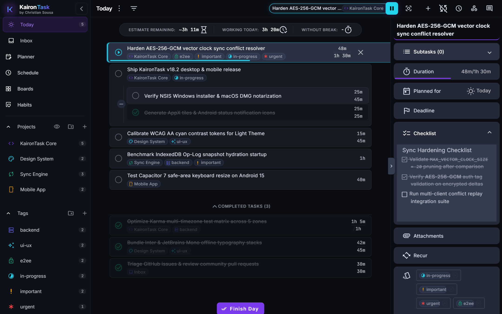

Capture & Triage
Add tasks anywhere via Shift+A with inline tags, project routing, natural dates, and time estimates without touching the mouse.
LOCAL-FIRST · OPEN SOURCE · AES-256-GCM
Built for software engineers and technical teams who want keyboard-driven planning, accurate time tracking, and zero vendor lock-in. Your data stays in IndexedDB and syncs under your own key.
IndexedDB · Vector-Clock Op-Log · Web / Desktop / Mobile · MIT

Add tasks anywhere via Shift+A with inline tags, project routing, natural dates, and time estimates without touching the mouse.
Track active tasks down to the second in the Today list or switch to Focus Mode with Countdown, Pomodoro, or Flowtime timers.
Distribute workload across multi-day Planner columns, automatic Timeline blocks, Kanban boards, and the Eisenhower Matrix.
Review work windows and completed tasks in Daily Summary, then inspect weekly hours or export timesheets from the Worklog.
Edit the command line below to test how KaironTask parses projects, tags, timeboxes, and natural-language dates.
No mandatory cloud account, no analytics scripts, and no third-party data brokers.
| Primary Persistence | Local IndexedDB stores (app_data & sequential op_log) with zero network latency. |
|---|---|
| Client-Side E2EE | Authenticated AES-256-GCM encryption derives keys locally before any delta leaves your device. |
| Conflict Resolution | Immutable UUIDv7 operation logs combined with deterministic Vector Clock ordering. |
| Sync Targets | KaironSync (self-hostable Node/PostgreSQL), WebDAV (Nextcloud / ownCloud), Dropbox, or shared local folder. |
| Issue & Calendar Integrations | GitHub, GitLab, Jira, Linear, ClickUp, Trello, Gitea, Redmine, OpenProject, CalDAV, and Nextcloud Deck. |
Zero install. Works offline via Service Worker with full IndexedDB local storage.
Open Web App →Electron desktop build with global shortcuts, idle detection, and system tray timer.
Download Releases →Capacitor native wrapper with background sync notifications and mobile gestures.
Mobile Builds →Deploy both the web client and KaironSync server in your own Docker host.
Deployment Guide →